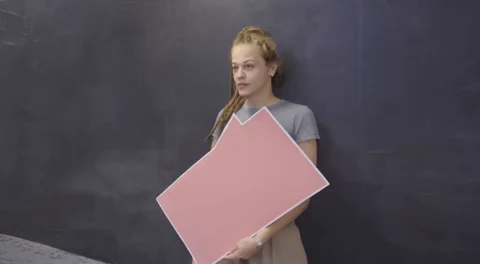
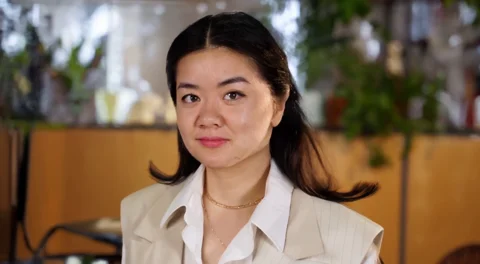

Stage3 DD · 同一程序、同一默认规则
六个原案例＋手持板回归＋一个未参与调参的新视频，各81真实帧。原六例本轮RGB与上一版逐帧完全一致；携带物保护采用同一自动规则。屋顶完整247帧已生成并核对，人物后段仍有重影，整体画质未通过。
目标：固定目标机位下背景更稳，同时保留原片动作。原生DD、作者LoRA、VAE和辅助模型权重冻结；背景参考与保护范围自动生成，无逐例参数或手工遮罩。背景补全与边缘仍有局限，不把背景静止等同整体画质通过。
上一轮完整消融及失败记录 · 历史逐例结果 · 统一配置
屋顶完整247帧：已生成，查看全段与三处续接交界 · 人物重影未通过验收。
新增：统一通路＋动作适配器，3个原Hard与3个新Hard的六列对照 · 已生成并核验，整体画质尚未通过。
新增：第四例＋三个新Hard的带左右标签骨架专项 · 已生成并核对；已定位第四例首帧的骨架条件错误。
原视频片段与Stage2末帧
按需加载；320宽精确预览，缩放后的YUV420逐帧无损。
失败发现后的回归：手持板
此视频已用于发现并修正规则，不再当作本轮未调参测试。原人物遮罩漏掉了携带物；现用冻结SAM2自动候选及人物接触、空间关系筛选，不指定物体类别，也不按案例名称处理。
携带物回归：全81帧缩略图中粉色板面完整，已修正上一版漏保护造成的板面改色；背景更稳，细节和实时播放仍待验收。
Stage2末帧

修正规则后新增的未调参视频
相同版本与配置冻结后运行。此例动作较简单，用于新增回归，不代表新Hard动作泛化已通过。
未调参简单新例：全81帧缩略图无场景崩坏或彩噪，表情与眨眼持续变化；背景更稳，不代表复杂动作泛化已通过。
Stage2末帧

方法与验收范围
- DD原生81帧，source21 latent，纯噪声σ=1、seed42、CFG1、作者LoRA强度1，50步。
- 冻结NLF/SAM2自动估计人物，SAM2自动候选识别与人物接触、空间上相关的携带物；冻结LaMa估计原Stage2遮挡背景。
- 每步去噪在保护范围外锚定同一背景，强度1，使用实际采样ε；不使用整段目标视频初始化。
- 相同I2V首图65帧＋静态参考80帧编码，VAE一致预热后丢弃64帧。
- 生成RGB前约束256维背景解码特征；前后2帧前景并集、4像素保护与4像素过渡。人物及携带物估计保护区RGB对本次匹配DD解码逐像素不变。
原六例的新自动规则确实重新执行。全部有效采样条件逐值相同后精确复用DD采样，并重跑分割和解码；不是新增六次DD测试。背景比较使用相同估计前景范围，包含启动帧；遮罩与遮挡补全都不是GT。没有最终RGB拼贴、平滑、稳定化或插帧。
室内例仍有地板／钢琴补全不自然；简单D的人物附近指标仍弱于历史逐例修复；屋顶已有Stage2残影与完整长段问题尚待解决。不能宣称所有视频画质已通过。